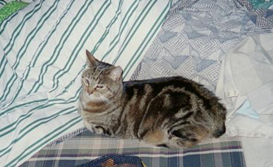

| Its
the new handy dandy thingy! It is designed to make it easier to go from page to page. You no longer have to return to my main page every time you wish to see a new page. Simply click on the face of whose page you want to see and you will magically be sent there.         |
Penelope
Penelope is over eight years old, she likes to lay on my dad's bed, she is not
fond of cat toys, she loves to be scratched on her head and if your not moving
she will lay on you.
